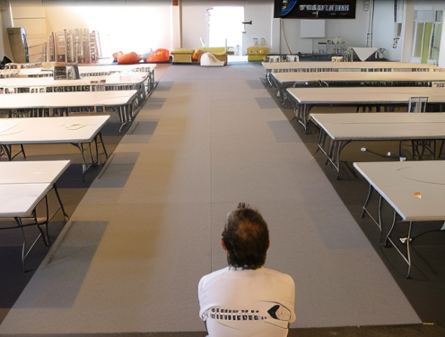

Inércia Demoparty 2006 is organized by Associação Inércia.
A demoparty is a meeting of demosceners and other people interested in digital art. Our purpose is to promote digital art in its distinct areas through demoscene activities with presentations and competitions.
The 2006 edition of Inércia Demoparty will support over 200 machines. Participants should bring their own computer.
There will be a big screen projection system and sound system to present the productions submitted for the event along with some presentations by well known sceners.
Participants will also have access to a chillout area where demos of several platforms, styles and age will be projected 24 hours a day.
A demo is a program that demonstrates the audiovisual capacities of a certain machine, along with the technical and artistic hability of their creators, the demosceners.
Inércia Demoparty is the place to exchange experiences regarding the several areas of digital art (code programming, musical composition, graphical design).
It is part of Games 2006, organized by the Associação de Produtos de Jogos Electrónicos (APROJE), and it aims primarily to promote the video game industry in Portugal. The event will feature debates, roundtables, workshops, and a LAN party intended to discuss, among other topics, the feasibility of building a "Game City" in the Portalegre district - 400-hectare area where companies in the sector could cluster.
Unfortunately, the Games 2006 organization failed to deliver any of their promises. Yes, we had a hall, a projector, tables and chairs. But that was it. No visitors, no buses, no prize money or expenses paid. We thought we were going to have our biggest event yet, taking the next step towards something that would rival any demoparty in Europe, but instead we had an empty hall and a demoscene.tv crew who, after a day sitting alone in the hall, decided to leave.

Not only it set back the game industry several years or decades, it tore the Inércia Association apart and the few following events were organized by one or two people, until the rebirth of the Association in 2022.
2006 is, therefore, seen as the black year for the portuguese demoscene. Despite the efforts of many people, this event single handed destroyed the momentum the Association had and was responsible for many people quitting the scene altogether. Nevertheless, it stands as a warning to us all that each step must be carefully pondered and growth must always be met with responsibility.